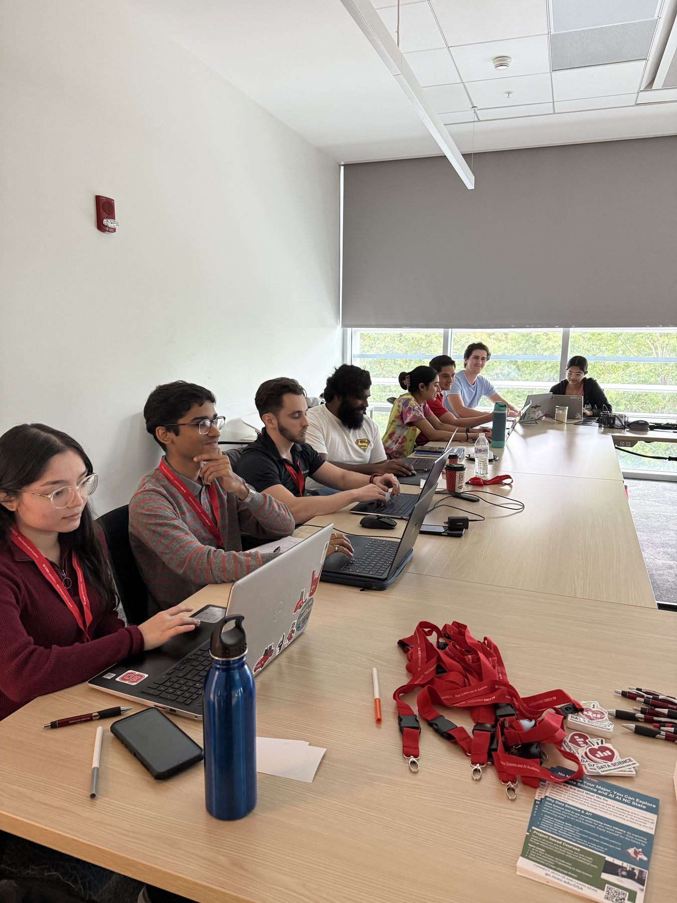
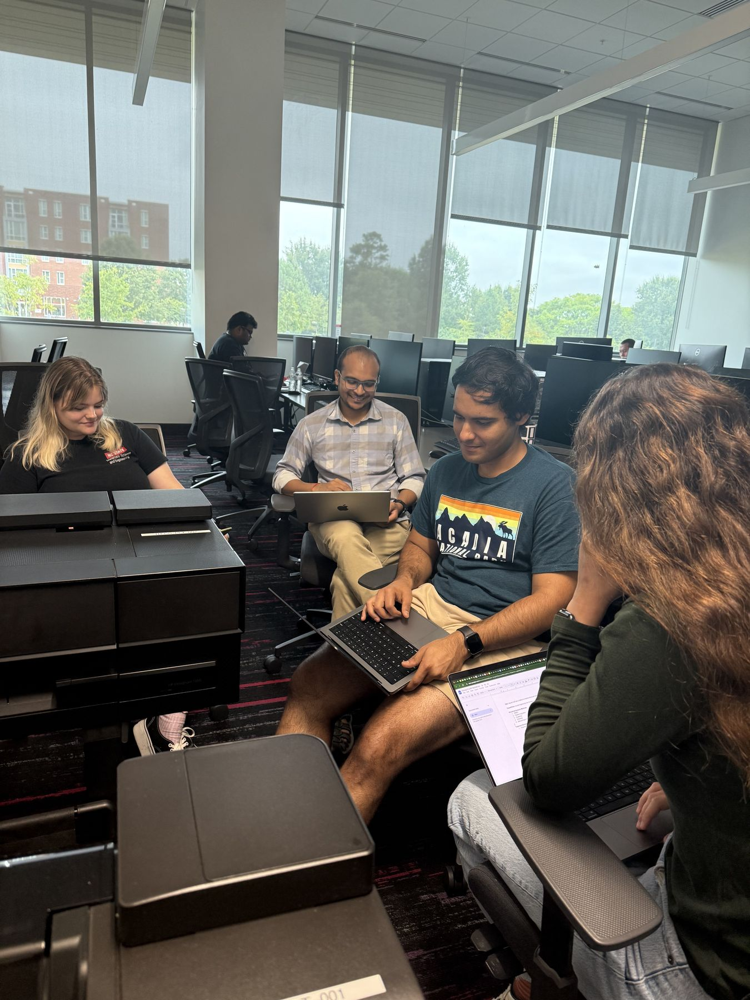

Bring the science
Materials scientists, chemists, physicists, mathematicians. You bring the hard problem, the messy dataset, the workflow that eats your week.
NC State Materials Science & Engineering presents
A free, two-day build sprint where scientists and builders team up to create AI tools for real research — part of the worldwide Open Scientific Intelligence Hackathon for the physical sciences & mathematics.
Kickoff in
Formerly the LLM Hackathon for Materials Science & Chemistry · Worldwide event
Why this hackathon
Scientists know which problems matter. Builders know what today's AI can actually do. For two days on Centennial Campus, they sit at the same table.
Materials scientists, chemists, physicists, mathematicians. You bring the hard problem, the messy dataset, the workflow that eats your week.
Computer scientists, data folks, engineers, designers. You bring LLMs, agents, pipelines and interfaces, plus a curiosity about where they break.
A worldwide movement
NC State is one of the on-site hubs of the global OSI Hackathon. Every site hacks the same two days and submits to the same showcase.
Visit the worldwide eventWho should come
Any department, any institution, any level. If you're curious about AI for science, there's a seat for you.
Turn a bottleneck from your lab into a tool that solves it.
This year's scope spans all of the physical sciences and math.
Find a problem worth solving and a domain partner to solve it with.
Undergrads and grad students — a great first hackathon.
Share your experience, mentor a team, or build alongside one.
Never called an AI model from code? The resources below will get you going.
On us
What to build
LLMs, agents, datasets, benchmarks, models, scientific software — if it helps researchers work faster or see further, it counts. A few seeds to get you thinking:
Assistants for materials databases and electronic lab notebooks.
Agents that set up, run and analyze MD or DFT workflows.
Curate datasets, extract data from papers, build evaluations.
Generative tools for polymers, alloys, molecules and soft matter.
Plugins, models and pipelines other researchers can reuse.
Interactive labs, tutors and explainers for science classrooms.
Schedule
All times Eastern. Tentative Times follow the worldwide OSI format; final details will be posted on Slack.
Global opening, then meet people and form teams on site. Come solo — we'll help you find a team.
Pick a problem, sketch a plan, start building.
Food, snacks and water provided. Exact time announced on Slack.
Mentors from academia and industry available on Slack throughout.
Keep building. On-site hours will be shared on Slack.
Refuel with your team.
Write up the project, record a short demo, prepare your submission.
Submit through the worldwide OSI Hackathon process.
Projects from every site are reviewed.
Winners announced and featured projects presented online.
How to join
Fill out our short form to save your on-site spot.
Register hereRoom details, schedule updates, team-finding and questions — it's also how to reach us.
Join SlackSign up for the worldwide OSI Hackathon. You need this to submit your project to the global event.
Global registrationVenue
Exact room will be shared on Slack and with registered participants.
Everyone. Students, researchers, postdocs, staff and industry professionals from any department or institution are welcome.
Nothing. The event is free, and food, snacks, water and an event T-shirt are provided on site.
No. Teams work best with a mix of domain experts and builders, and the resources plus mentors on Slack will help you get started.
No. Come solo and we'll help you find teammates at kickoff or on Slack. You're also welcome to arrive with a team.
A laptop and charger. If you have a research problem or dataset you'd love to work on, bring that too.
On NC State's Centennial Campus in Raleigh. The building and room will be announced on Slack and shared with registered participants.
The NC State site is in person. If you can't make it to campus, you can join the worldwide OSI Hackathon virtually.
They'll be announced before kickoff. Join the Slack to hear first.
Yes. Global registration is required to submit your project to the worldwide OSI Hackathon, and it keeps you in the loop on announcements and the showcase. Register for both: our NC State form and the global event.
Join our Slack and post your question there — that's the fastest way to reach us.
Looking back
In September 2025, researchers and students filled a room on Centennial Campus as one of 16 sites in a worldwide sprint that produced 120 projects.
This year the event has a new name, a wider scope and more sites. Same idea: put scientists and builders at one table and see what happens.


Thank you
We can't wait to see what you build. Grab your spot, join the Slack, and bring a friend from the other half.